Basic Trajectory Inference#
Diffusion maps were introduced by Ronald Coifman and Stephane Lafon, and the underlying idea is to assume that the data are samples from a diffusion process.
Palantir is an algorithm to align cells along differentiation trajectories. Palantir models differentiation as a stochastic process where stem cells differentiate to terminally differentiated cells by a series of steps through a low dimensional phenotypic manifold. Palantir effectively captures the continuity in cell states and the stochasticity in cell fate determination.
Note that both methods require the input of cells in their initial state, and we will introduce other methods that do not require the input of artificial information, such as pyVIA, in subsequent analyses.
Preprocess data#
As an example, we apply differential kinetic analysis to pancrea development.
import scanpy as sc
import matplotlib.pyplot as plt
import omicverse as ov
ov.plot_set(font_path='Arial')
%load_ext autoreload
%autoreload 2
🔬 Starting plot initialization...
Using already downloaded Arial font from: /var/folders/rv/3jnfbs0d6r7d0c5bfj7ft5k00000gn/T/omicverse_arial.ttf
Registered as: Arial
🧬 Detecting GPU devices…
✅ Apple Silicon MPS detected
• [MPS] Apple Silicon GPU - Metal Performance Shaders available
____ _ _ __
/ __ \____ ___ (_)___| | / /__ _____________
/ / / / __ `__ \/ / ___/ | / / _ \/ ___/ ___/ _ \
/ /_/ / / / / / / / /__ | |/ / __/ / (__ ) __/
\____/_/ /_/ /_/_/\___/ |___/\___/_/ /____/\___/
🔖 Version: 2.1.2rc1 📚 Tutorials: https://omicverse.readthedocs.io/
✅ plot_set complete.
adata=ov.datasets.pancreatic_endocrinogenesis()
⚠️ File ./data/endocrinogenesis_day15.h5ad already exists
Loading data from ./data/endocrinogenesis_day15.h5ad
✅ Successfully loaded: 3696 cells × 27998 genes
adata=ov.pp.preprocess(adata,mode='shiftlog|pearson',n_HVGs=3000,)
adata.raw = adata
adata = adata[:, adata.var.highly_variable_features]
ov.pp.scale(adata)
ov.pp.pca(adata,layer='scaled',n_pcs=50)
🔍 [2026-04-10 10:11:04] Running preprocessing in 'cpu' mode...
Begin robust gene identification
After filtration, 17750/27998 genes are kept.
Among 17750 genes, 16426 genes are robust.
✅ Robust gene identification completed successfully.
Begin size normalization: shiftlog and HVGs selection pearson
🔍 Count Normalization:
Target sum: 500000.0
Exclude highly expressed: True
Max fraction threshold: 0.2
⚠️ Excluding 1 highly-expressed genes from normalization computation
Excluded genes: ['Ghrl']
✅ Count Normalization Completed Successfully!
✓ Processed: 3,696 cells × 16,426 genes
✓ Runtime: 0.09s
🔍 Highly Variable Genes Selection (Experimental):
Method: pearson_residuals
Target genes: 3,000
Theta (overdispersion): 100
✅ Experimental HVG Selection Completed Successfully!
✓ Selected: 3,000 highly variable genes out of 16,426 total (18.3%)
✓ Results added to AnnData object:
• 'highly_variable': Boolean vector (adata.var)
• 'highly_variable_rank': Float vector (adata.var)
• 'highly_variable_nbatches': Int vector (adata.var)
• 'highly_variable_intersection': Boolean vector (adata.var)
• 'means': Float vector (adata.var)
• 'variances': Float vector (adata.var)
• 'residual_variances': Float vector (adata.var)
Time to analyze data in cpu: 0.75 seconds.
✅ Preprocessing completed successfully.
Added:
'highly_variable_features', boolean vector (adata.var)
'means', float vector (adata.var)
'variances', float vector (adata.var)
'residual_variances', float vector (adata.var)
'counts', raw counts layer (adata.layers)
End of size normalization: shiftlog and HVGs selection pearson
╭─ SUMMARY: preprocess ──────────────────────────────────────────────╮
│ Duration: 0.8544s │
│ Shape: 3,696 x 27,998 -> 3,696 x 16,426 │
│ │
│ CHANGES DETECTED │
│ ──────────────── │
│ ● VAR │ ✚ highly_variable (bool) │
│ │ ✚ highly_variable_features (bool) │
│ │ ✚ highly_variable_rank (float) │
│ │ ✚ means (float) │
│ │ ✚ n_cells (int) │
│ │ ✚ percent_cells (float) │
│ │ ✚ residual_variances (float) │
│ │ ✚ robust (bool) │
│ │ ✚ variances (float) │
│ │
│ ● UNS │ ✚ REFERENCE_MANU │
│ │ ✚ history_log │
│ │ ✚ hvg │
│ │ ✚ log1p │
│ │ ✚ status │
│ │ ✚ status_args │
│ │
│ ● LAYERS │ ✚ counts (sparse matrix, 3696x16426) │
│ │
╰────────────────────────────────────────────────────────────────────╯
╭─ SUMMARY: scale ───────────────────────────────────────────────────╮
│ Duration: 0.3556s │
│ Shape: 3,696 x 3,000 (Unchanged) │
│ │
│ CHANGES DETECTED │
│ ──────────────── │
│ ● LAYERS │ ✚ scaled (array, 3696x3000) │
│ │
╰────────────────────────────────────────────────────────────────────╯
computing PCA🔍
with n_comps=50
🖥️ Using sklearn PCA for CPU computation
🖥️ sklearn PCA backend: CPU computation
📊 PCA input data type: ArrayView, shape: (3696, 3000), dtype: float64
🔧 PCA solver used: covariance_eigh
finished✅ (8.83s)
╭─ SUMMARY: pca ─────────────────────────────────────────────────────╮
│ Duration: 8.8342s │
│ Shape: 3,696 x 3,000 (Unchanged) │
│ │
│ CHANGES DETECTED │
│ ──────────────── │
│ ● UNS │ ✚ scaled|original|cum_sum_eigenvalues │
│ │ ✚ scaled|original|pca_var_ratios │
│ │
│ ● OBSM │ ✚ scaled|original|X_pca (array, 3696x50) │
│ │
╰────────────────────────────────────────────────────────────────────╯
Let us inspect the contribution of single PCs to the total variance in the data. This gives us information about how many PCs we should consider in order to compute the neighborhood relations of cells. In our experience, often a rough estimate of the number of PCs does fine.
ov.utils.plot_pca_variance_ratio(adata, n_pcs=15)

ov.pl.umap(
adata,
color='clusters'
)
X_umap converted to UMAP to visualize and saved to adata.obsm['UMAP']
if you want to use X_umap, please set convert=False
{kind=link}
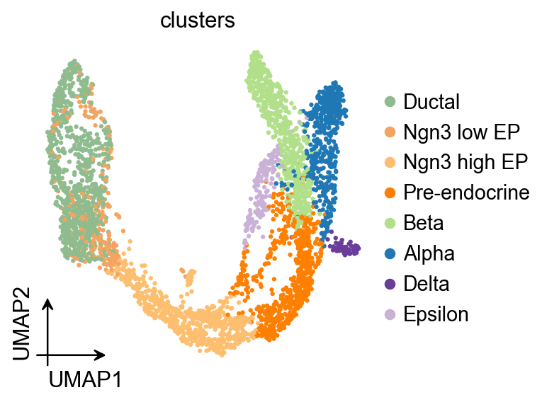
Diffusion map#
Here, we used ov.single.TrajInfer to construct a Trajectory Inference object.
Traj=ov.single.TrajInfer(
adata,
basis='X_umap',
groupby='clusters',
use_rep='scaled|original|X_pca',
n_comps=50,
)
Traj.set_origin_cells('Ductal')
Traj.inference(method='diffusion_map')
ov.pl.embedding(
adata,
basis='X_umap',
color=['clusters','dpt_pseudotime'],
frameon='small',
cmap='Reds'
)
{kind=link}
PAGA graph abstraction has benchmarked as top-performing method for trajectory inference. It provides a graph-like map of the data topology with weighted edges corresponding to the connectivity between two clusters.
Here, PAGA is extended by neighbor directionality.
ov.utils.cal_paga(
adata,
use_time_prior='dpt_pseudotime',
vkey='paga',
groups='clusters'
)
running PAGA using priors: ['dpt_pseudotime']
finished
added
'paga/connectivities', connectivities adjacency (adata.uns)
'paga/connectivities_tree', connectivities subtree (adata.uns)
'paga/transitions_confidence', velocity transitions (adata.uns)
ov.utils.plot_paga(
adata,basis='umap',
size=50,
alpha=.1,
title='PAGA DPT-graph',
min_edge_width=2,
node_size_scale=1.5,
show=False,
legend_loc=False
)
<Axes: title={'center': 'PAGA DPT-graph'}>
{kind=link}
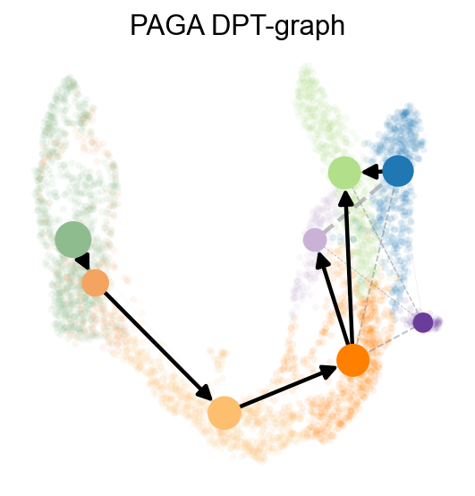
Slingshot#
Provides functions for inferring continuous, branching lineage structures in low-dimensional data. Slingshot was designed to model developmental trajectories in single-cell RNA sequencing data and serve as a component in an analysis pipeline after dimensionality reduction and clustering. It is flexible enough to handle arbitrarily many branching events and allows for the incorporation of prior knowledge through supervised graph construction.
Traj=ov.single.TrajInfer(
adata,basis='X_umap',
groupby='clusters',
use_rep='scaled|original|X_pca',
n_comps=50
)
Traj.set_origin_cells('Ductal')
#Traj.set_terminal_cells(["Granule mature","OL","Astrocytes"])
If you only need the proposed timing and not the lineage of the process, then you can leave the debug_axes parameter unset.
Traj.inference(method='slingshot',num_epochs=1)
Lineages: [Lineage[3, 6, 5, 7, 1, 0], Lineage[3, 6, 5, 7, 1, 4], Lineage[3, 6, 5, 7, 2]]
Reversing from leaf to root
Averaging branch @1 with lineages: [0, 1] [<pcurvepy2.pcurve.PrincipalCurve object at 0x13fec9d10>, <pcurvepy2.pcurve.PrincipalCurve object at 0x1406b19d0>]
Averaging branch @7 with lineages: [0, 1, 2] [<pcurvepy2.pcurve.PrincipalCurve object at 0x13fff8210>, <pcurvepy2.pcurve.PrincipalCurve object at 0x1406b27d0>]
Shrinking branch @7 with curves: [<pcurvepy2.pcurve.PrincipalCurve object at 0x13fff8210>, <pcurvepy2.pcurve.PrincipalCurve object at 0x1406b27d0>]
Shrinking branch @1 with curves: [<pcurvepy2.pcurve.PrincipalCurve object at 0x13fec9d10>, <pcurvepy2.pcurve.PrincipalCurve object at 0x1406b19d0>]
else, you can set debug_axes to visualize the lineage
fig, axes = plt.subplots(nrows=2, ncols=2, figsize=(8, 8))
Traj.inference(method='slingshot',num_epochs=1,debug_axes=axes)
Lineages: [Lineage[3, 6, 5, 7, 1, 0], Lineage[3, 6, 5, 7, 1, 4], Lineage[3, 6, 5, 7, 2]]
Reversing from leaf to root
Averaging branch @1 with lineages: [0, 1] [<pcurvepy2.pcurve.PrincipalCurve object at 0x13fed1210>, <pcurvepy2.pcurve.PrincipalCurve object at 0x13ffd9b50>]
Averaging branch @7 with lineages: [0, 1, 2] [<pcurvepy2.pcurve.PrincipalCurve object at 0x13fe15f50>, <pcurvepy2.pcurve.PrincipalCurve object at 0x13fb0c9d0>]
Shrinking branch @7 with curves: [<pcurvepy2.pcurve.PrincipalCurve object at 0x13fe15f50>, <pcurvepy2.pcurve.PrincipalCurve object at 0x13fb0c9d0>]
Shrinking branch @1 with curves: [<pcurvepy2.pcurve.PrincipalCurve object at 0x13fed1210>, <pcurvepy2.pcurve.PrincipalCurve object at 0x13ffd9b50>]
{kind=link}
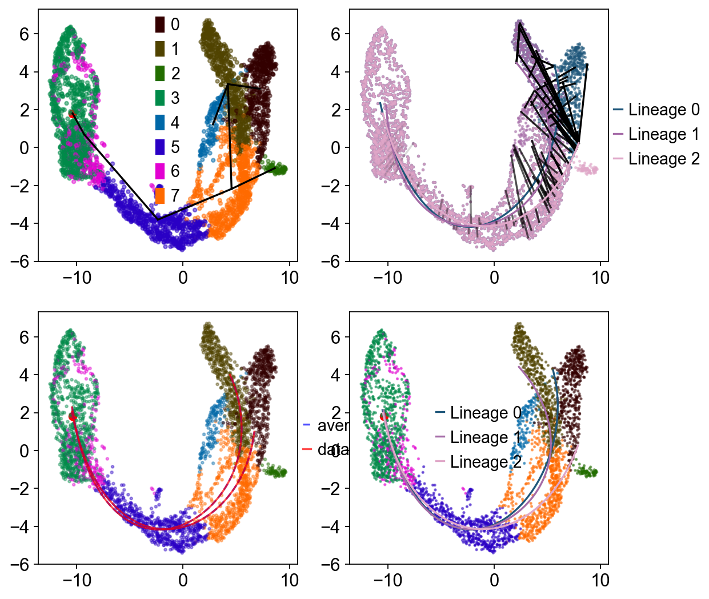
ov.pl.embedding(
adata,basis='X_umap',
color=['clusters','slingshot_pseudotime'],
frameon='small',
cmap='Reds'
)
{kind=link}
sc.pp.neighbors(adata,use_rep='scaled|original|X_pca')
ov.utils.cal_paga(
adata,
use_time_prior='slingshot_pseudotime',
vkey='paga',
groups='clusters'
)
running PAGA using priors: ['slingshot_pseudotime']
finished
added
'paga/connectivities', connectivities adjacency (adata.uns)
'paga/connectivities_tree', connectivities subtree (adata.uns)
'paga/transitions_confidence', velocity transitions (adata.uns)
ov.utils.plot_paga(
adata,basis='umap',
size=50,
alpha=.1,
title='PAGA Slingshot-graph',
min_edge_width=2,
node_size_scale=1.5,
show=False,
legend_loc=False
)
<Axes: title={'center': 'PAGA Slingshot-graph'}>
{kind=link}
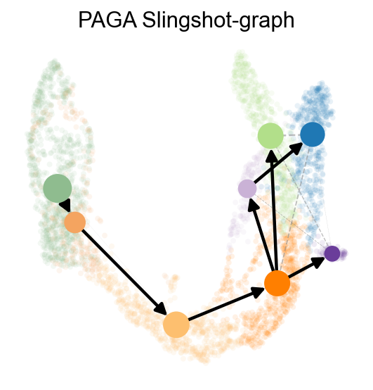
Summarize two Slingshot lineages with a mirrored dynamic heatmap#
Slingshot can return multiple lineage curves. The snippet below converts the fitted curves into per-cell lineage labels and lineage-specific pseudotime, then plots two lineages side by side. We reverse the first lineage so the left panel points toward the branch point, which makes the branch-specific programs easier to compare.
import pandas as pd
import numpy as np
slingshot_genes = ['Sox9', 'Neurog3', 'Fev', 'Gcg', 'Arx', 'Pax4', 'Ins2', 'Pdx1', 'Sst', 'Hhex']
n_lineages = len(Traj.slingshot.lineages)
slingshot_lineage_labels = [f'Lineage {i}' for i in range(n_lineages)]
dominant_lineage = np.asarray(Traj.slingshot.cell_weights).argmax(axis=1)
lineage_specific_pt = np.full(adata.n_obs, np.nan)
for i, curve in enumerate(Traj.slingshot.curves):
curve_pt = np.asarray(curve.pseudotimes_interp, dtype=float)
adata.obs[f'slingshot_lineage_{i + 1}_pt'] = curve_pt
lineage_specific_pt[dominant_lineage == i] = curve_pt[dominant_lineage == i]
adata.obs['slingshot_lineage'] = pd.Categorical(
[slingshot_lineage_labels[i] for i in dominant_lineage],
categories=slingshot_lineage_labels,
ordered=True,
)
adata.obs['slingshot_lineage_pseudotime'] = lineage_specific_pt
selected_slingshot_lineages = slingshot_lineage_labels[:2]
slingshot_marker = {
'Alpha fate': ['Gcg', 'Arx'],
'Beta fate': ['Pax4', 'Ins2', 'Pdx1'],
'Delta fate': ['Sst', 'Hhex'],
'Endocrine progenitor': ['Sox9', 'Neurog3', 'Fev'],
}
d1 = ov.pl.dynamic_heatmap(
adata,
var_names=slingshot_marker,
pseudotime='slingshot_lineage_pseudotime',
lineage_key='slingshot_lineage',
lineages=selected_slingshot_lineages,
reverse_ht=[selected_slingshot_lineages[0]],
use_raw=adata.raw is not None,
use_cell_columns=False,
cell_annotation='clusters',
cell_bins=200,
smooth_window=17,
fitted_window=31,
figsize=(5, 4),
standard_scale='var',
cmap='RdBu_r',
use_fitted=True,
border=False,
show=False,
)
🔍 Dynamic heatmap:
Candidate features: 10
Pseudotime: slingshot_lineage_pseudotime
Lineage key: slingshot_lineage
Cell annotation: clusters
use_fitted=True | cell_bins=200 | cmap=RdBu_r
Lineages: Lineage 0, Lineage 1
✅ Dynamic heatmap completed!
✓ Matrix shape: 10 features × 337 columns
{kind=link}
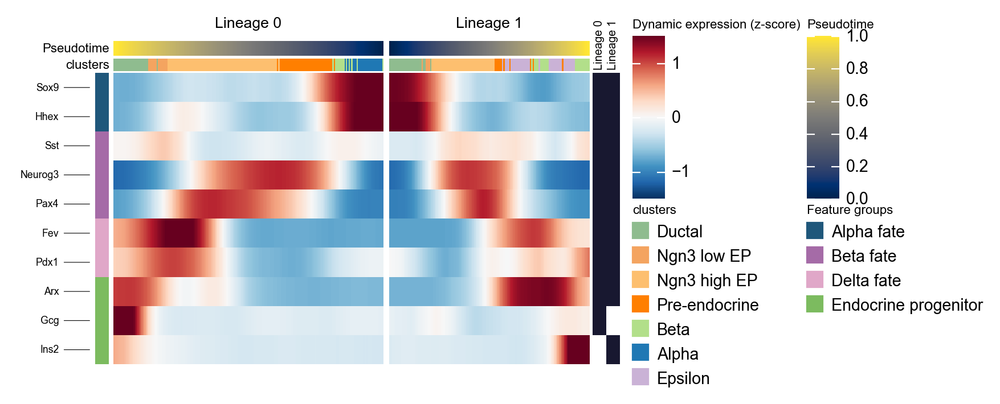
d1 = ov.pl.dynamic_heatmap(
adata,
var_names=slingshot_marker,
pseudotime='slingshot_lineage_pseudotime',
lineage_key='slingshot_lineage',
lineages=selected_slingshot_lineages,
reverse_ht=[selected_slingshot_lineages[0]],
use_raw=adata.raw is not None,
use_cell_columns=False,
cell_annotation='clusters',
figsize=(5, 4),
standard_scale='var',
show_row_names=True,
use_fitted=False,
border=True,
show=False,
)
🔍 Dynamic heatmap:
Candidate features: 10
Pseudotime: slingshot_lineage_pseudotime
Lineage key: slingshot_lineage
Cell annotation: clusters
use_fitted=False | cell_bins=100 | cmap=viridis
Lineages: Lineage 0, Lineage 1
✅ Dynamic heatmap completed!
✓ Matrix shape: 10 features × 183 columns
{kind=link}
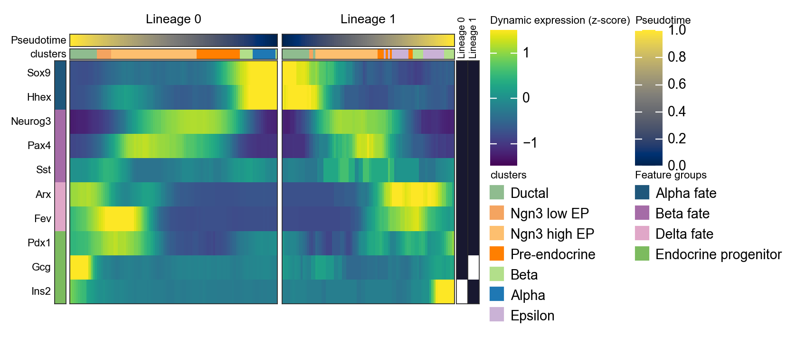
Reuse dynamic_features / dynamic_trends across Slingshot lineages#
The updated API can now split a single AnnData object by lineage or cell-state annotation via groupby, making it straightforward to compare shared GAM trends across selected Slingshot lineages. Here we fit the same marker set across lineages and overlay multiple genes in one compact panel using lineage colors and gene-specific line styles.
slingshot_trend_genes = ['Sox9', 'Neurog3', 'Fev', 'Gcg', 'Arx', 'Pax4', 'Ins2', 'Pdx1', 'Sst', 'Hhex']
slingshot_dyn_res = ov.single.dynamic_features(
adata,
genes=slingshot_trend_genes,
pseudotime='slingshot_lineage_pseudotime',
groupby='slingshot_lineage',
groups=selected_slingshot_lineages,
use_raw=adata.raw is not None,
distribution='normal',
link='identity',
n_splines=8,
store_raw=True,
)
slingshot_dyn_res.get_stats(successful_only=True).sort_values(['gene']).head(8)
🔍 Dynamic feature analysis:
Views: 2 | Features: 10
Pseudotime: slingshot_lineage_pseudotime
Grouping: slingshot_lineage
Expression source: adata.raw
GAM: normal-identity | splines=8
✅ Dynamic feature analysis completed!
✓ Successful fits: 20/20
✓ Fitted rows: 4000
✓ Raw observations stored: 30550
dataset groupby_key group gene success error n_cells \
14 Lineage 1 slingshot_lineage Lineage 1 Arx True None 533
4 Lineage 0 slingshot_lineage Lineage 0 Arx True None 2522
2 Lineage 0 slingshot_lineage Lineage 0 Fev True None 2522
12 Lineage 1 slingshot_lineage Lineage 1 Fev True None 533
3 Lineage 0 slingshot_lineage Lineage 0 Gcg True None 2522
13 Lineage 1 slingshot_lineage Lineage 1 Gcg True None 533
9 Lineage 0 slingshot_lineage Lineage 0 Hhex True None 2522
19 Lineage 1 slingshot_lineage Lineage 1 Hhex True None 533
exp_ncells peak_time valley_time min_pseudotime max_pseudotime \
14 110 20.163205 8.026130 0.0 25.970730
4 600 22.561005 7.726371 0.0 24.600767
2 1010 19.594078 9.086213 0.0 24.600767
12 182 20.032699 7.634611 0.0 25.970730
3 643 24.538956 18.234237 0.0 24.600767
13 83 25.252946 14.420933 0.0 25.970730
9 765 1.421652 24.291712 0.0 24.600767
19 188 2.283858 25.905477 0.0 25.970730
r2 explained_deviance p_value padj
14 0.395091 0.395091 7.481761e-01 7.481761e-01
4 0.265808 0.265808 1.936941e-01 1.936941e-01
2 0.589726 0.589726 1.110223e-16 1.387779e-16
12 0.406811 0.406811 1.110223e-16 1.586033e-16
3 0.318281 0.318281 1.110223e-16 1.387779e-16
13 0.016039 0.016039 1.160972e-07 1.451215e-07
9 0.488404 0.488404 1.110223e-16 1.387779e-16
19 0.563442 0.563442 1.110223e-16 1.586033e-16
ov.pl.dynamic_trends(
slingshot_dyn_res,
genes=['Pax4', 'Ins2', 'Gcg', 'Sox9'],
compare_features=True,
compare_groups=True,
line_style_by='features',
figsize=(6, 4),
linewidth=2.2,
title='Slingshot lineage trend comparison',
)
plt.show()
🔍 Dynamic trend plotting:
Features: 4 | Groups: 2
compare_features=True | compare_groups=True
✅ Dynamic trend plotting completed!
{kind=link}
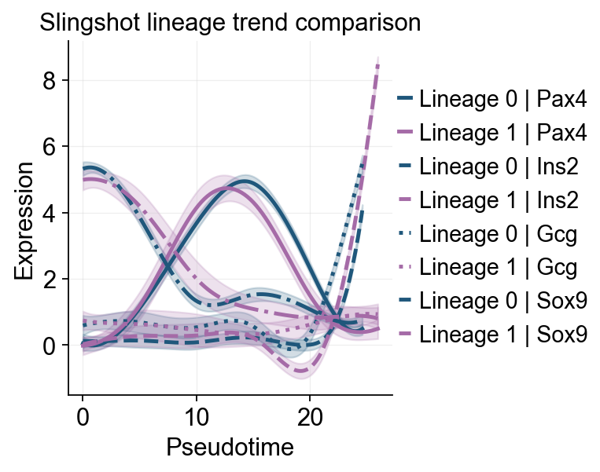
ov.pl.dynamic_trends(
slingshot_dyn_res,
genes=['Pax4', 'Ins2', 'Gcg', 'Sox9'],
compare_features=True,
figsize=(4, 3),
add_point=True,
linewidth=2.2,
line_style_by='features',
)
🔍 Dynamic trend plotting:
Features: 4 | Groups: 2
compare_features=True | compare_groups=False
✅ Dynamic trend plotting completed!
{kind=link}
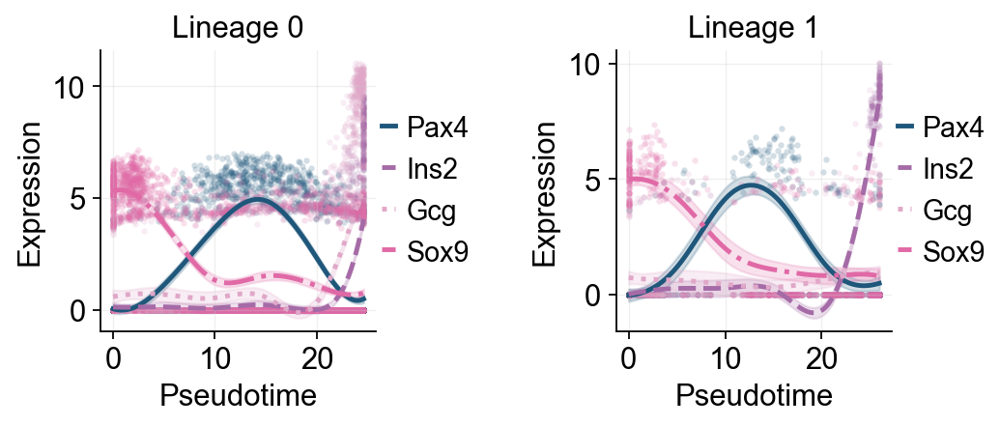
ov.pl.dynamic_trends(
slingshot_dyn_res,
genes=['Pax4', 'Ins2', 'Gcg', 'Sox9'],
figsize=(5, 3),
compare_groups=True,
add_point=True,
linewidth=2.2,
ncols=2,
line_palcolor='Reds',
)
🔍 Dynamic trend plotting:
Features: 4 | Groups: 2
compare_features=False | compare_groups=True
✅ Dynamic trend plotting completed!
{kind=link}
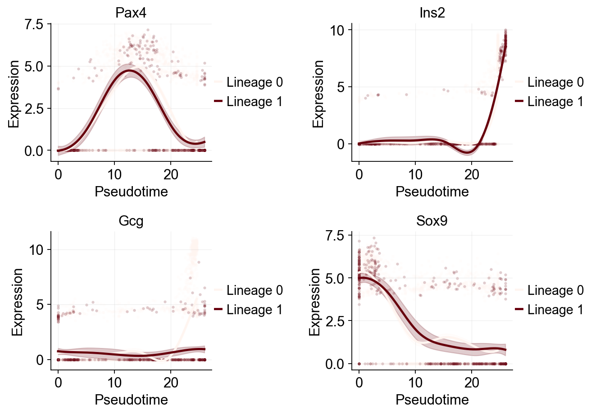
g = ov.pl.dynamic_heatmap(
adata,
top_features=1000, # 保留动态性最强的前 1000 个基因用于绘图
pseudotime='slingshot_lineage_pseudotime',
lineage_key='slingshot_lineage',
lineages=selected_slingshot_lineages,
reverse_ht=[selected_slingshot_lineages[0]],
use_raw=adata.raw is not None,
use_cell_columns=False,
cell_annotation='clusters',
cell_bins=90,
smooth_window=17,
fitted_window=31,
n_split=5,
figsize=(5, 6),
standard_scale='var',
cmap='viridis',
top_label_features=10,
border=False,
show=False,
)
🔍 Dynamic heatmap:
Candidate features: 3000
Pseudotime: slingshot_lineage_pseudotime
Lineage key: slingshot_lineage
Cell annotation: clusters
use_fitted=True | cell_bins=90 | cmap=viridis
Lineages: Lineage 0, Lineage 1
✅ Dynamic heatmap completed!
✓ Matrix shape: 1000 features × 166 columns
{kind=link}
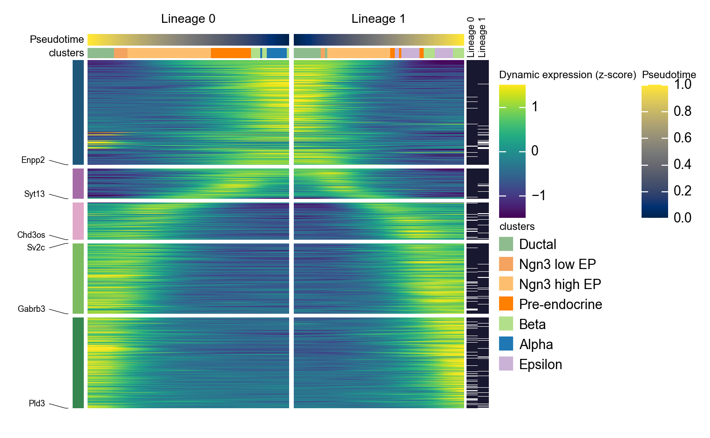
Palantir#
Palantir can be run by specifying an approxiate early cell.
Palantir can automatically determine the terminal states as well. In this dataset, we know the terminal states and we will set them using the terminal_states parameter
Here, we used ov.single.TrajInfer to construct a Trajectory Inference object.
Traj=ov.single.TrajInfer(
adata,
basis='X_umap',
groupby='clusters',
use_rep='scaled|original|X_pca',
n_comps=50
)
Traj.set_origin_cells('Ductal')
Traj.set_terminal_cells(["Alpha","Beta","Delta","Epsilon"])
Traj.inference(method='palantir',num_waypoints=500)
**finished identifying marker genes by COSG**
Sampling and flocking waypoints...
Time for determining waypoints: 0.0012705167134602865 minutes
Determining pseudotime...
Shortest path distances using 30-nearest neighbor graph...
Time for shortest paths: 0.22957585255304971 minutes
Iteratively refining the pseudotime...
Correlation at iteration 1: 0.9998
Correlation at iteration 2: 1.0000
Entropy and branch probabilities...
Markov chain construction...
Computing fundamental matrix and absorption probabilities...
Project results to all cells...
<omicverse.external.palantir.presults.PResults at 0x1400a7650>
Palantir results can be visualized on the tSNE or UMAP using the plot_palantir_results function
Traj.palantir_plot_pseudotime(
embedding_basis='X_umap',
cmap='RdBu_r',
s=3,
n_cols=4,
figsize=(8, 6),
)
{kind=link}
Once the cells are selected, it’s often helpful to visualize the selection on the pseudotime trajectory to ensure we’ve isolated the correct cells for our specific trend. We can do this using the plot_branch_selection function:
Traj.palantir_cal_branch(
eps=0,
plot_kwargs={
'figsize': (6, 4),
'selected_color': '#1f77b4',
'deselected_color': '#d9d9d9',
's': 4,
},
)
{kind=link}
ov.external.palantir.plot.plot_trajectory(
adata,
"Alpha",
cell_color="palantir_entropy",
n_arrows=10,
color="red",
scanpy_kwargs=dict(cmap="RdBu_r"),
)
[2026-04-10 10:12:44,311] [INFO ] Using sparse Gaussian Process since n_landmarks (50) < n_samples (805) and rank = 1.0.
[2026-04-10 10:12:44,311] [INFO ] Using covariance function Matern52(ls=1.262711524963379).
[2026-04-10 10:12:44,328] [INFO ] Computing 50 landmarks with k-means clustering (random_state=42).
[2026-04-10 10:12:45,495] [INFO ] Sigma interpreted as element-wise standard deviation.
<Axes: title={'center': 'Branch: Alpha'}, xlabel='UMAP1', ylabel='UMAP2'>
{kind=link}
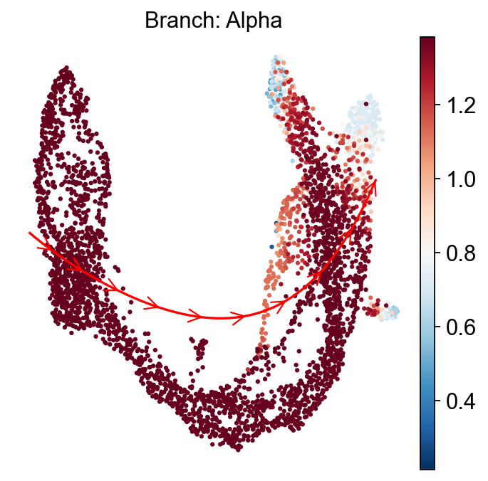
Palantir uses Mellon Function Estimator to determine the gene expression trends along different lineages. The marker trends can be determined using the following snippet. This computes the trends for all lineages. A subset of lineages can be used using the lineages parameter.
adata.layers['lognorm'] = adata.X.copy()
# MAGIC currently conflicts with the NumPy version in the dev environment,
# so we keep a stable smoothed-expression placeholder layer for downstream trends/heatmaps.
adata.layers['MAGIC_imputed_data'] = adata.layers['lognorm'].copy()
gene_trends = Traj.palantir_cal_gene_trends(
layers="MAGIC_imputed_data",
)
Delta
[2026-04-10 10:12:46,539] [INFO ] Using sparse Gaussian Process since n_landmarks (500) < n_samples (624) and rank = 1.0.
[2026-04-10 10:12:46,539] [INFO ] Using covariance function Matern52(ls=1.0).
[2026-04-10 10:12:47,562] [INFO ] Sigma interpreted as element-wise standard deviation.
Beta
[2026-04-10 10:12:47,877] [INFO ] Using sparse Gaussian Process since n_landmarks (500) < n_samples (939) and rank = 1.0.
[2026-04-10 10:12:47,877] [INFO ] Using covariance function Matern52(ls=1.0).
[2026-04-10 10:12:48,327] [INFO ] Sigma interpreted as element-wise standard deviation.
Alpha
[2026-04-10 10:12:48,474] [INFO ] Using sparse Gaussian Process since n_landmarks (500) < n_samples (805) and rank = 1.0.
[2026-04-10 10:12:48,475] [INFO ] Using covariance function Matern52(ls=1.0).
[2026-04-10 10:12:48,919] [INFO ] Sigma interpreted as element-wise standard deviation.
Epsilon
[2026-04-10 10:12:49,052] [INFO ] Using non-sparse Gaussian Process since n_landmarks (500) >= n_samples (324) and rank = 1.0.
[2026-04-10 10:12:49,053] [INFO ] Using covariance function Matern52(ls=1.0).
[2026-04-10 10:12:50,044] [INFO ] Sigma interpreted as element-wise standard deviation.
Traj.palantir_plot_gene_trends(
['Pax4', 'Ins2'],
layers='MAGIC_imputed_data',
figsize=(4.5, 3),
compare_groups=True,
linewidth=2.2,
)
plt.show()
🔍 Dynamic feature analysis:
Views: 4 | Features: 2
Pseudotime: palantir_pseudotime
Layer: MAGIC_imputed_data
GAM: normal-identity | splines=8
✅ Dynamic feature analysis completed!
✓ Successful fits: 8/8
✓ Fitted rows: 1600
🔍 Dynamic trend plotting:
Features: 2 | Groups: 4
compare_features=False | compare_groups=True
✅ Dynamic trend plotting completed!
{kind=link}
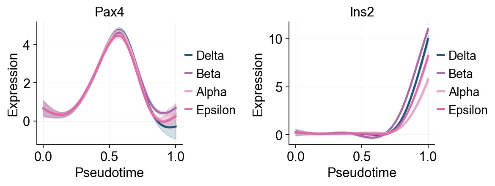
Traj.palantir_plot_gene_trends(
['Pax4', 'Ins2'],
lineages=['Beta', 'Alpha'],
layers='MAGIC_imputed_data',
figsize=(4.5, 3),
compare_groups=True,
linewidth=2.2,
)
plt.show()
🔍 Dynamic feature analysis:
Views: 2 | Features: 2
Pseudotime: palantir_pseudotime
Layer: MAGIC_imputed_data
GAM: normal-identity | splines=8
✅ Dynamic feature analysis completed!
✓ Successful fits: 4/4
✓ Fitted rows: 800
🔍 Dynamic trend plotting:
Features: 2 | Groups: 2
compare_features=False | compare_groups=True
✅ Dynamic trend plotting completed!
{kind=link}
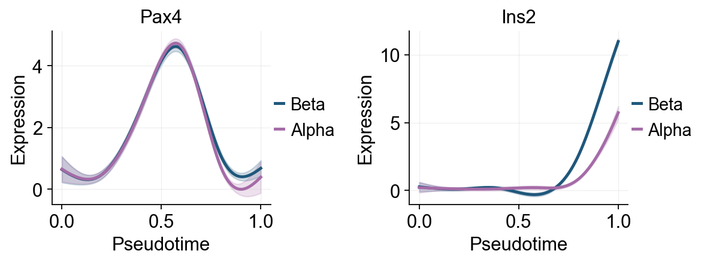
Fit reusable GAM trends with dynamic_features#
ov.single.dynamic_features provides a reusable GAM-based layer for pseudotime trends. In addition to fitted curves, it stores summary statistics and optional raw points, so the same result can be reused for single-gene plots, marker screening, grouped cell-state comparisons, and downstream heatmaps. The same API now also supports groupby=... for cell-type or lineage-aware trend fitting and works naturally with ov.pl.dynamic_trends(..., compare_features=True, compare_groups=True) for compact multi-series overlays.
dynamic_feature_genes = ['Sox9', 'Neurog3', 'Fev', 'Gcg', 'Arx', 'Pax4', 'Ins2', 'Pdx1', 'Sst', 'Hhex']
dyn_res = ov.single.dynamic_features(
adata,
genes=dynamic_feature_genes,
pseudotime='palantir_pseudotime',
layer='MAGIC_imputed_data',
distribution='normal',
link='identity',
n_splines=8,
store_raw=True,
)
dyn_res.get_stats(successful_only=True).sort_values('peak_time')
🔍 Dynamic feature analysis:
Views: 1 | Features: 10
Pseudotime: palantir_pseudotime
Layer: MAGIC_imputed_data
GAM: normal-identity | splines=8
✅ Dynamic feature analysis completed!
✓ Successful fits: 10/10
✓ Fitted rows: 2000
✓ Raw observations stored: 36960
dataset groupby_key group gene success error n_cells exp_ncells \
1 adata None None Neurog3 True None 3696 1569
9 adata None None Hhex True None 3696 1300
0 adata None None Sox9 True None 3696 1712
5 adata None None Pax4 True None 3696 1087
2 adata None None Fev True None 3696 1449
4 adata None None Arx True None 3696 784
8 adata None None Sst True None 3696 253
3 adata None None Gcg True None 3696 827
6 adata None None Ins2 True None 3696 496
7 adata None None Pdx1 True None 3696 1974
peak_time valley_time min_pseudotime max_pseudotime r2 \
1 0.002513 0.891960 0.0 1.0 0.285898
9 0.138191 0.982412 0.0 1.0 0.298491
0 0.153266 0.997487 0.0 1.0 0.368678
5 0.575377 0.866834 0.0 1.0 0.366869
2 0.665829 0.339196 0.0 1.0 0.574176
4 0.786432 0.997487 0.0 1.0 0.251777
8 0.791457 0.997487 0.0 1.0 0.030415
3 0.907035 0.580402 0.0 1.0 0.220289
6 0.997487 0.680905 0.0 1.0 0.488961
7 0.997487 0.002513 0.0 1.0 0.113565
explained_deviance p_value padj
1 0.285898 1.110223e-16 1.850372e-16
9 0.298491 7.449596e-14 1.064228e-13
0 0.368678 1.110223e-16 1.850372e-16
5 0.366869 1.110223e-16 1.850372e-16
2 0.574176 1.110223e-16 1.850372e-16
4 0.251777 1.125431e-01 1.250479e-01
8 0.030415 1.521196e-01 1.521196e-01
3 0.220289 1.195528e-03 1.494411e-03
6 0.488961 1.110223e-16 1.850372e-16
7 0.113565 1.110223e-16 1.850372e-16
selected_dynamic_genes = dyn_res.get_significant_features(
min_expcells=20,
r2_cutoff=0.1,
)
selected_dynamic_genes[:10]
['Sox9', 'Neurog3', 'Fev', 'Gcg', 'Arx', 'Pax4', 'Ins2', 'Pdx1', 'Hhex']
top_groups = adata.obs['clusters'].astype(str).value_counts().head(3).index.tolist()
grouped_dyn_res = ov.single.dynamic_features(
adata,
genes=['Gcg', 'Ins2', 'Pax4', 'Sox9'],
pseudotime='palantir_pseudotime',
layer='MAGIC_imputed_data',
groupby='clusters',
groups=top_groups,
distribution='normal',
link='identity',
n_splines=8,
store_raw=True,
)
grouped_dyn_res.get_stats(successful_only=True).head(8)
🔍 Dynamic feature analysis:
Views: 3 | Features: 4
Pseudotime: palantir_pseudotime
Grouping: clusters
Layer: MAGIC_imputed_data
GAM: normal-identity | splines=8
✅ Dynamic feature analysis completed!
✓ Successful fits: 12/12
✓ Fitted rows: 2400
✓ Raw observations stored: 8600
dataset groupby_key group gene success error n_cells \
0 Pre-endocrine clusters Pre-endocrine Gcg True None 592
1 Pre-endocrine clusters Pre-endocrine Ins2 True None 592
2 Pre-endocrine clusters Pre-endocrine Pax4 True None 592
3 Pre-endocrine clusters Pre-endocrine Sox9 True None 592
4 Ductal clusters Ductal Gcg True None 916
5 Ductal clusters Ductal Ins2 True None 916
6 Ductal clusters Ductal Pax4 True None 916
7 Ductal clusters Ductal Sox9 True None 916
exp_ncells peak_time valley_time min_pseudotime max_pseudotime \
0 70 0.509916 0.429133 0.428193 0.802052
1 25 0.716572 0.801112 0.428193 0.802052
2 403 0.592578 0.801112 0.428193 0.802052
3 167 0.617001 0.429133 0.428193 0.802052
4 152 0.370277 0.007606 0.006494 0.449263
5 26 0.007606 0.448151 0.006494 0.449263
6 14 0.007606 0.448151 0.006494 0.449263
7 865 0.448151 0.007606 0.006494 0.449263
r2 explained_deviance p_value padj
0 0.003552 0.003552 2.647972e-01 3.530629e-01
1 0.008065 0.008065 9.806613e-01 9.806613e-01
2 0.224016 0.224016 1.210588e-03 4.842353e-03
3 0.005778 0.005778 1.896374e-01 3.530629e-01
4 0.005458 0.005458 1.414816e-01 1.414816e-01
5 0.021043 0.021043 5.054241e-05 6.738988e-05
6 0.065421 0.065421 6.082501e-10 1.216500e-09
7 0.005043 0.005043 1.110223e-16 4.440892e-16
palantir_compare_genes = ['Gcg', 'Ins2', 'Pax4', 'Sox9']
ov.pl.dynamic_trends(
dyn_res,
genes=palantir_compare_genes,
compare_features=True,
linewidth=2.2,
figsize=(4.5, 3),
title='Palantir marker trends',
)
plt.show()
🔍 Dynamic trend plotting:
Features: 4 | Groups: 1
compare_features=True | compare_groups=False
✅ Dynamic trend plotting completed!
{kind=link}
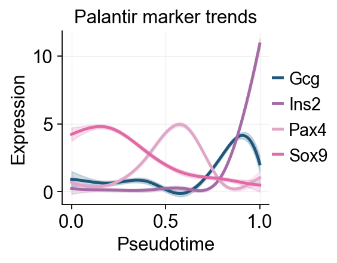
ov.pl.dynamic_trends(
grouped_dyn_res,
genes=['Gcg', 'Ins2', 'Pax4', 'Sox9'],
compare_groups=True,
figsize=(5, 3),
linewidth=2.2,
add_point=True,
ncols=2,
line_palcolor=['#1f77b4', '#ff7f0e', '#2ca02c', '#d62728']
)
plt.show()
🔍 Dynamic trend plotting:
Features: 4 | Groups: 3
compare_features=False | compare_groups=True
✅ Dynamic trend plotting completed!
{kind=link}
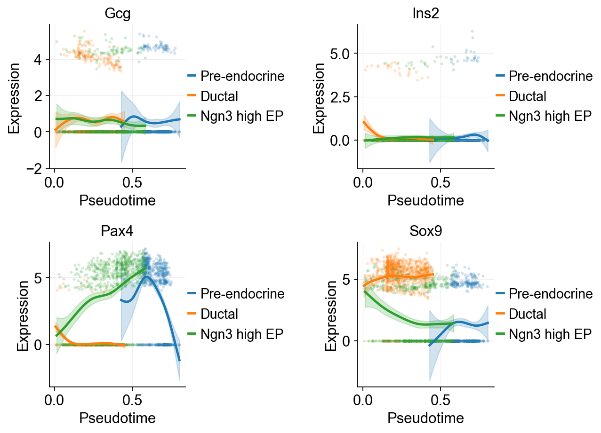
Summarize Palantir trends with a dynamic heatmap#
After computing palantir_pseudotime and MAGIC_imputed_data, we can use ov.pl.dynamic_heatmap to summarize pancreas marker dynamics along pseudotime. Compared with the single-gene trend curves above, the dynamic heatmap makes it easier to compare the activation order of multiple lineage programs in one view.
dynamic_marker_modules = {
'Endocrine progenitor': ['Sox9', 'Neurog3', 'Fev'],
'Alpha fate': ['Gcg', 'Arx'],
'Beta fate': ['Pax4', 'Ins2', 'Pdx1'],
'Delta fate': ['Sst', 'Hhex'],
}
d = ov.pl.dynamic_heatmap(
adata,
var_names=dynamic_marker_modules,
pseudotime='palantir_pseudotime',
layer='MAGIC_imputed_data',
cell_annotation='clusters',
# Bin columns are more stable here and preserve annotation tracks.
use_cell_columns=False,
cell_bins=200,
smooth_window=21,
fitted_window=41,
figsize=(4, 5),
standard_scale='var',
cmap='viridis',
show_row_names=True,
border=True,
show=False,
)
🔍 Dynamic heatmap:
Candidate features: 10
Pseudotime: palantir_pseudotime
Cell annotation: clusters
use_fitted=True | cell_bins=200 | cmap=viridis
✅ Dynamic heatmap completed!
✓ Matrix shape: 10 features × 200 columns
{kind=link}
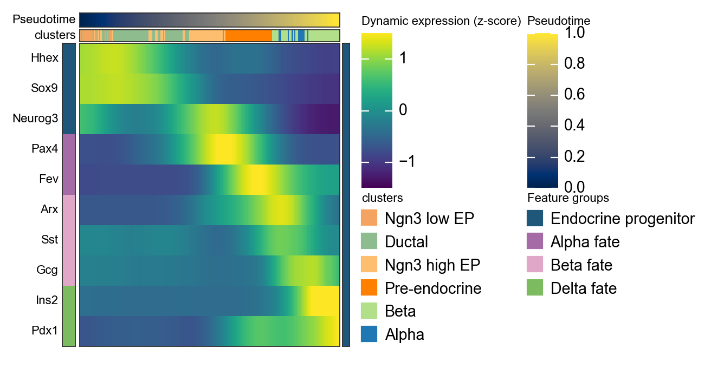
We can also use paga to visualize the cell stages
ov.utils.cal_paga(
adata,
use_time_prior='palantir_pseudotime',
vkey='paga',
groups='clusters'
)
running PAGA using priors: ['palantir_pseudotime']
finished
added
'paga/connectivities', connectivities adjacency (adata.uns)
'paga/connectivities_tree', connectivities subtree (adata.uns)
'paga/transitions_confidence', velocity transitions (adata.uns)
ov.utils.plot_paga(
adata,basis='umap',
size=50,
alpha=.1,
title='PAGA palantir-graph',
min_edge_width=2,
node_size_scale=1.5,
show=False,
legend_loc=False
)
<Axes: title={'center': 'PAGA palantir-graph'}>
{kind=link}
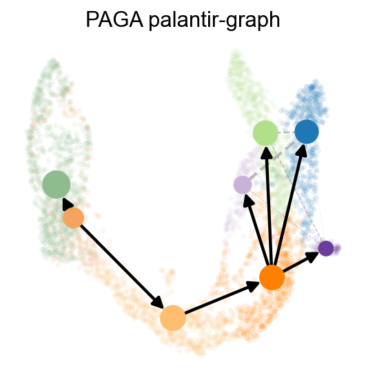
scTour#
scTour is an innovative and comprehensive method for dissecting cellular dynamics by analysing datasets derived from single-cell genomics.
It provides a unifying framework to depict the full picture of developmental processes from multiple angles including the developmental pseudotime, vector field and latent space.
Now we are ready to train the scTour model. The default loss_mode is negative binomial conditioned likelihood (nb), which requires raw UMI counts (stored in .X of the AnnData) as input. By default, the percentage of cells used to train the model is set to 0.9 when the total number of cells is less than 10,000 and 0.2 when greater than 10,000. Users can adjust the percentage by using the parameter percent (for example percent=0.6).
adata.X=adata.layers['counts'].copy()
sc.pp.calculate_qc_metrics(adata, percent_top=None, log1p=False, inplace=True)
Traj=ov.single.TrajInfer(
adata,basis='X_umap',
groupby='clusters',
use_rep='scaled|original|X_pca',
n_comps=50
)
Traj.inference(
method='sctour',
alpha_recon_lec=0.5,
alpha_recon_lode=0.5
)
ov.pl.embedding(
adata,
basis='X_umap',
color=['clusters','sctour_pseudotime'],
frameon='small',
cmap='Reds'
)
{kind=link}
adata.obs['sctour_pseudotime']=1-adata.obs['sctour_pseudotime']
ov.pl.embedding(
adata,basis='X_umap',
color=['clusters','sctour_pseudotime'],
frameon='small',
cmap='Reds'
)
{kind=link}
import os
os.makedirs('data', exist_ok=True)
adata.write('data/traj_tutorial.h5ad')
adata=ov.read('data/traj_tutorial.h5ad')
adata
AnnData object with n_obs × n_vars = 3696 × 3000
obs: 'clusters_coarse', 'clusters', 'S_score', 'G2M_score', 'dpt_pseudotime', 'slingshot_pseudotime', 'slingshot_lineage_1_pt', 'slingshot_lineage_2_pt', 'slingshot_lineage_3_pt', 'slingshot_lineage', 'slingshot_lineage_pseudotime', 'palantir_pseudotime', 'palantir_entropy', 'n_genes_by_counts', 'total_counts', 'sctour_pseudotime'
var: 'highly_variable_genes', 'n_cells', 'percent_cells', 'robust', 'highly_variable_features', 'means', 'variances', 'residual_variances', 'highly_variable_rank', 'highly_variable', 'n_cells_by_counts', 'mean_counts', 'pct_dropout_by_counts', 'total_counts'
uns: 'DM_EigenValues', 'REFERENCE_MANU', 'clusters_coarse_colors', 'clusters_colors', 'clusters_cosg', 'clusters_sizes', 'cosg', 'cosg_markers', 'day_colors', 'diffmap_evals', 'draw_graph', 'dynamic_features', 'history_log', 'hvg', 'iroot', 'log1p', 'neighbors', 'paga', 'paga_graph', 'palantir_waypoints', 'pca', 'rank_genes_groups', 'scaled|original|cum_sum_eigenvalues', 'scaled|original|pca_var_ratios', 'status', 'status_args'
obsm: 'DM_EigenVectors', 'DM_EigenVectors_multiscaled', 'UMAP', 'X_TNODE', 'X_VF', 'X_diffmap', 'X_draw_graph_fa', 'X_pca', 'X_umap', 'branch_masks', 'palantir_fate_probabilities', 'scaled|original|X_pca'
varm: 'PCs', 'gene_trends_Alpha', 'gene_trends_Beta', 'gene_trends_Delta', 'gene_trends_Epsilon', 'scaled|original|pca_loadings'
layers: 'MAGIC_imputed_data', 'counts', 'lognorm', 'scaled', 'spliced', 'unspliced'
obsp: 'DM_Kernel', 'DM_Similarity', 'connectivities', 'distances'